Top Masteries
 By
AmirGaris
By
AmirGaris
Contents
- Intro
- Current Champions
- Notable Milestones
-
Category Rankings
- Total Awards
- Total Awards (Excluding Hacks)
- Event Awards
- Site Awards
- Hack Awards
- Homebrew Awards
- Subset Awards
- Amstrad CPC
- Apple II
- Arcade
- Arcadia 2001
- Arduboy
- Atari 2600
- Atari Jaguar CD
- Dreamcast
- Elektor TV Games Computer
- Fairchild Channel F
- Game Boy
- Game Boy Advance
- Game Boy Color
- Game Gear
- GameCube
- Interton VC 4000
- Master System
- Mega Drive
- Mega Duck
- Nintendo 64
- NES
- Nintendo DS
- Nintendo DSi
- PC Engine
- PC Engine CD
- PC-8000/8800
- PlayStation
- PlayStation 2
- PlayStation Portable
- Pokémon Mini
- Sega Saturn
- Sega CD
- SG-1000
- SNES
- Uzebox
- Virtual Boy
- WASM-4
- Watara Supervision
Intro
We are going to take a look at another metric for greatness, Mastery Awards. Mastery awards are given to users when they complete every achievement for a given set in hardcore mode. Users wear mastery awards as a badge of honor on their profile page representing all the hard work they put into truly becoming a master of the game.
Below we will take a look at which users rank among the best with the most mastery awards in several categories well as notable updates from the previous month to each individual category. Check to see how you rank among the rest of the community members.
Special thanks to  Nydaxn for creating the ranking image templates.
Nydaxn for creating the ranking image templates.
* Data as of June 1st 2025.
Current Champions
 Total Awards
Total Awards 3DO Interactive Multiplayer
3DO Interactive Multiplayer HotCoffee
HotCoffee Amstrad CPC
Amstrad CPC Apple II
Apple II Arcade
Arcade Arcadia 2001
Arcadia 2001 Arduboy
Arduboy Atari 2600
Atari 2600 Atari 7800
Atari 7800 Atari Jaguar
Atari Jaguar Atari Jaguar CD
Atari Jaguar CD Atari Lynx
Atari Lynx ColecoVision
ColecoVision Dreamcast
Dreamcast Elektor TV Games Computer
Elektor TV Games Computer 9marlin4
9marlin4 Fairchild Channel F
Fairchild Channel F Game Boy
Game Boy Game Boy Advance
Game Boy Advance Game Boy Color
Game Boy Color Game Gear
Game Gear GameCube
GameCube grapeisgreat
grapeisgreat Intellivision
Intellivision Interton VC 4000
Interton VC 4000 Magnavox Odyssey 2
Magnavox Odyssey 2 Master System
Master System Genesis/Mega Drive
Genesis/Mega Drive Mega Duck
Mega Duck MSX
MSX Nintendo 64
Nintendo 64 Neo Geo CD
Neo Geo CD Neo Geo Pocket
Neo Geo Pocket Maoski
Maoski NES/Famicom
NES/Famicom Nintendo DS
Nintendo DS Nintendo DSi
Nintendo DSi PC Engine/TurboGrafx-16
PC Engine/TurboGrafx-16 PC Engine CD/TurboGrafx-CD
PC Engine CD/TurboGrafx-CD PC-8000/8800
PC-8000/8800 PC-FX
PC-FX PlayStation
PlayStation PlayStation 2
PlayStation 2 PlayStation Portable
PlayStation Portable Pokémon Mini
Pokémon Mini Sega 32X
Sega 32X Nevanos
Nevanos Sega CD
Sega CD SG-1000
SG-1000 SNES/Super Famicom
SNES/Super Famicom Uzebox
Uzebox Vectrex
Vectrex Eeroz
Eeroz Virtual Boy
Virtual Boy WASM-4
WASM-4 Watara Supervision
Watara Supervision WonderSwan
WonderSwanNotable Milestones
1200 Mastery Awards
 Whoops Whoops |
1000 Mastery Awards
 AllKindsOfJames AllKindsOfJames |
 MiningMario MiningMario |
 Sutarion Sutarion |
900 Mastery Awards
 MaxMilyin MaxMilyin |
800 Mastery Awards
 DeeCee DeeCee |
600 Mastery Awards
 Dominick Dominick |
 ElMullet ElMullet |
500 Mastery Awards
 CrystallineDrop CrystallineDrop |
 Draco655 Draco655 |
 Hexcreed Hexcreed |
 HylianRoach HylianRoach |
 TneraOgeid TneraOgeid |
400 Mastery Awards
 Aeliana Aeliana |
 Mindez Mindez |
 Mindhral Mindhral |
 multonic multonic |
 Tirbaba Tirbaba |
300 Mastery Awards
 bennz13 bennz13 |
 BraveVesperia BraveVesperia |
 WeedGuy420 WeedGuy420 |
 MarceloRonzani MarceloRonzani |
 Varilinity Varilinity |
200 Mastery Awards
 BaronVonMetz BaronVonMetz |
 Cipra Cipra |
 DustinRomero1268 DustinRomero1268 |
 GarlicPong64 GarlicPong64 |
 Fingers Fingers |
 Goodbite Goodbite |
 gustavovaladares gustavovaladares |
 Jurbadis Jurbadis |
 LordAndrew LordAndrew |
 royal2024 royal2024 |
 RyCuLe RyCuLe |
 The1Ross The1Ross |
 bocchicookie bocchicookie |
100 Mastery Awards
 AbgeFranzt
AbgeFranzt Aeternal
Aeternal architextured
architextured arthur4272
arthur4272 astine
astine AviScales
AviScales baradras
baradras Bean525
Bean525 BillyTGAoBaM
BillyTGAoBaM BloodMesa
BloodMesa CarnuSaga
CarnuSaga Catlin
Catlin cavsfan2313
cavsfan2313 ChippiHeppu
ChippiHeppu DimensionIceDragon
DimensionIceDragon DizzySus
DizzySus doomhiker
doomhiker dude1286
dude1286 elborjasxd
elborjasxd Felixno
Felixno FoliatedPupura
FoliatedPupura gamebrainz11
gamebrainz11 gorocz
gorocz haavi
haavi jossyhadash
jossyhadash KevKjef
KevKjef leavewe
leavewe MisterRetro
MisterRetro ModelZGolden
ModelZGolden Nintencats73
Nintencats73 NIREXINE
NIREXINE Odincito89
Odincito89 oldboy2907
oldboy2907 PrimalGiratina
PrimalGiratina Pvtter
Pvtter richterhayabusa
richterhayabusa RyanRJ
RyanRJ sam4594
sam4594 EphemeralEnigmas
EphemeralEnigmas Sherwood
Sherwood SkweeZee
SkweeZee SouperSplash
SouperSplash SrOliveira
SrOliveira stupidcatgirl
stupidcatgirl SuperSleepyT
SuperSleepyT thykingviking
thykingviking ViniciusRS
ViniciusRS Wangfou
Wangfou Xanders08
Xanders08 xevious1974
xevious1974 Zerosignx
Zerosignx ZuniGab
ZuniGabCategory Rankings
Total Awards
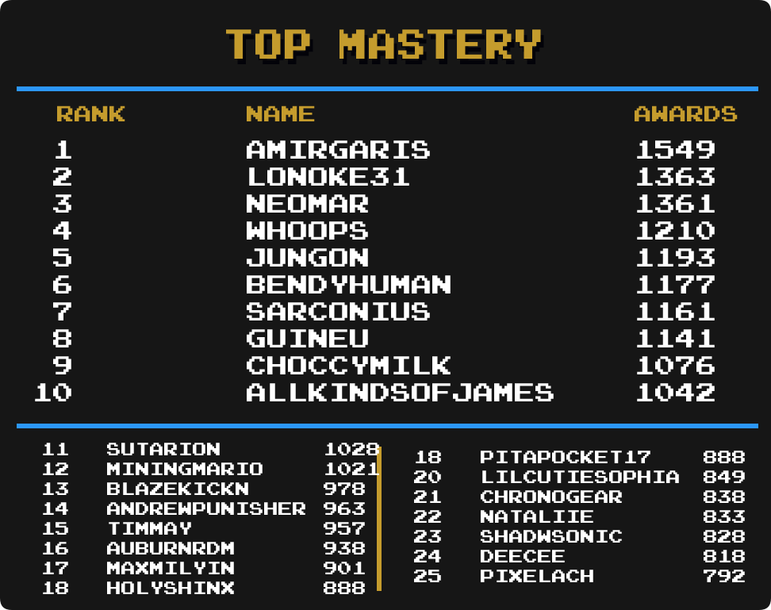
-
AmirGaris remains in 1st with 1549 total mastery awards.
-
 Jungon has moved up 1 spot and is in 5th place.
Jungon has moved up 1 spot and is in 5th place. -
AllKindsOfJames has moved up 2 spots and is in 10th place.
-
 Timmay has moved up 1 spot and is in 15th place.
Timmay has moved up 1 spot and is in 15th place. -
 ChronoGear has moved up 1 spot and is in 21st place.
ChronoGear has moved up 1 spot and is in 21st place. -
 Nataliie has moved up 1 spot and is in 22nd place.
Nataliie has moved up 1 spot and is in 22nd place. -
DeeCee has made it into the top 25 and is in 24th place.
Total Awards (Excluding Hacks)
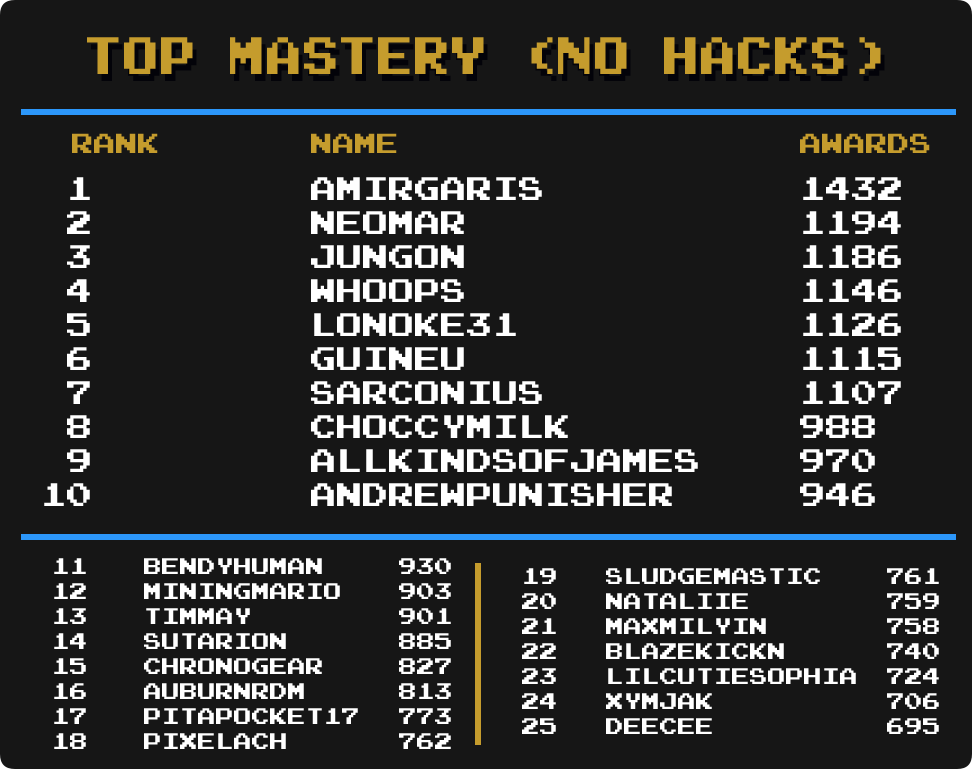
-
AmirGaris remains in 1st with 1432 total mastery awards.
-
 Lonoke31 has moved up 1 spot and is in 5th place.
Lonoke31 has moved up 1 spot and is in 5th place. -
AllKindsOfJames has moved up 2 spots and is in 9th place.
-
ChronoGear has moved up 1 spot and is in 15th place.
-
 pitapocket17 has moved up 4 spots and is in 17th place.
pitapocket17 has moved up 4 spots and is in 17th place. -
DeeCee has made it into the top 25 and is in 25th place.
Event Awards
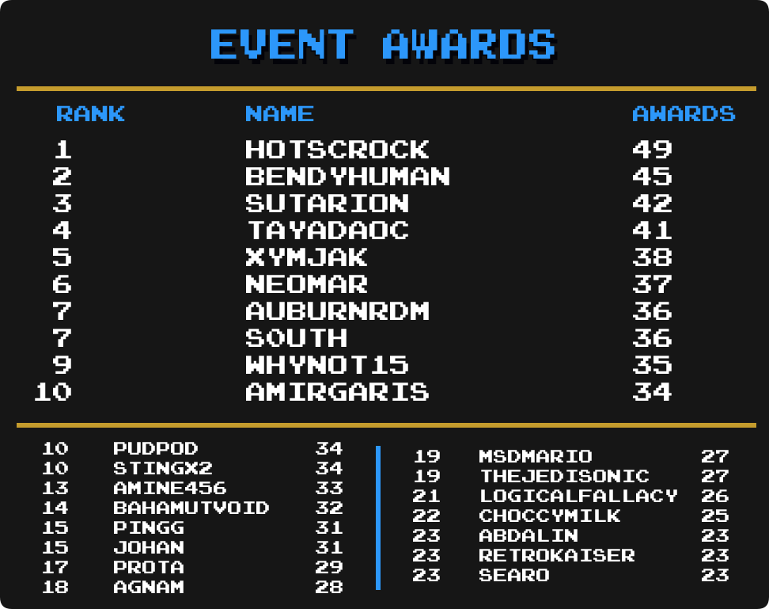
-
 Hotscrock remains in 1st with 49 total mastery awards.
Hotscrock remains in 1st with 49 total mastery awards. -
Sutarion has moved up 1 spot and is in 3rd place.
-
 NEOMAR has moved up 1 spot and is in 6th place.
NEOMAR has moved up 1 spot and is in 6th place. -
 Whynot15 has moved up 4 spots and is in 9th place.
Whynot15 has moved up 4 spots and is in 9th place. -
 Prota has moved up 2 spots and is in 17th place.
Prota has moved up 2 spots and is in 17th place. -
 ChoccyMilk has moved up 1 spot and is in 22nd place.
ChoccyMilk has moved up 1 spot and is in 22nd place.
Site Awards
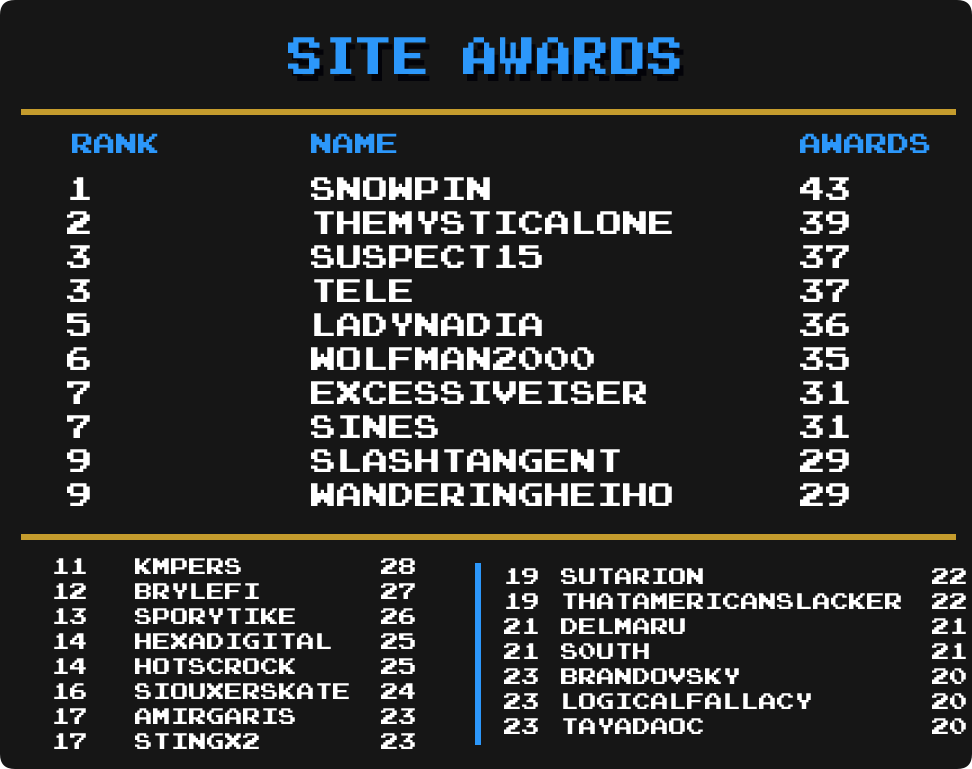
-
 SnowPin remains in 1st with 43 total mastery awards.
SnowPin remains in 1st with 43 total mastery awards. -
Sutarion has moved up 4 spots and is tied for 19th place.
-
 Brandovsky has moved up 2 spots and is in a 3-way tie for 23rd place.
Brandovsky has moved up 2 spots and is in a 3-way tie for 23rd place.
Hack Awards
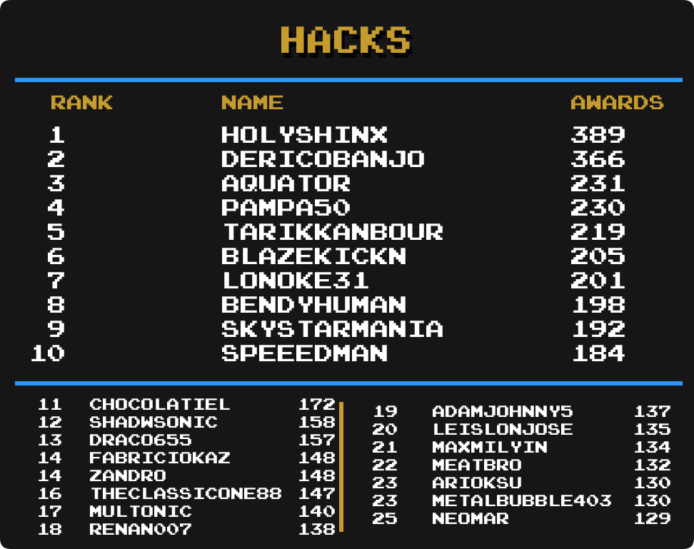
-
 HolyShinx remains in 1st with 389 total mastery awards.
HolyShinx remains in 1st with 389 total mastery awards. -
 Aquator has moved up 1 spot and is in 3rd place.
Aquator has moved up 1 spot and is in 3rd place. -
Lonoke31 has moved up 1 spot and is in 7th place.
-
 Speeedman has moved up 1 spot and is in 10th place.
Speeedman has moved up 1 spot and is in 10th place. -
 zandro has moved up 1 spot and is tied for 14th place.
zandro has moved up 1 spot and is tied for 14th place. -
multonic has moved up 2 spots and is in 17th place.
-
 Arioksu has made it into the top 25 and is tied for 23rd place.
Arioksu has made it into the top 25 and is tied for 23rd place. -
NEOMAR has made it into the top 25 and is in 25th place.
Homebrew Awards
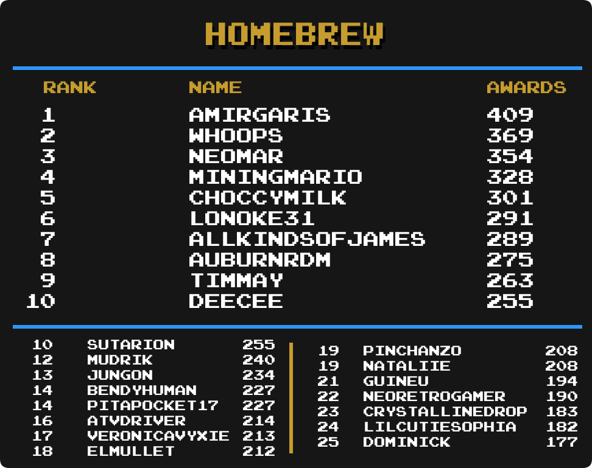
-
AmirGaris remains in 1st with 409 total mastery awards.
-
DeeCee has moved up 2 spots and is tied for 10th place.
-
Jungon has moved up 1 spot and is in 13th place.
-
pitapocket17 has moved up 1 spot and is tied for 14th place.
-
ElMullet has moved up 3 spots and is in 18th place.
-
CrystallineDrop has moved up 1 spot and is in 23rd place.
-
Dominick has made it into the top 25 and is in 25th place.
Subset Awards
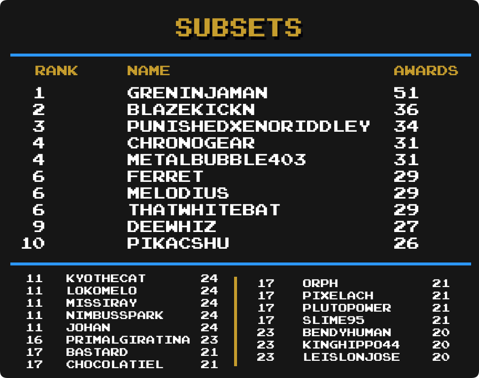
-
 GreninjaMan remains in 1st with 51 total mastery awards.
GreninjaMan remains in 1st with 51 total mastery awards. -
 Melodius has moved up 3 spots and is in a 3-way tie for 6th place.
Melodius has moved up 3 spots and is in a 3-way tie for 6th place. -
 Lokomelo has moved up 3 spots and is in a 5-way tie for 11th place.
Lokomelo has moved up 3 spots and is in a 5-way tie for 11th place. -
 Johan has moved up 1 spot and is in a 5-way tie for 11th place.
Johan has moved up 1 spot and is in a 5-way tie for 11th place. -
 Orph has moved up 6 spots and is in a 6-way tie for 17th place.
Orph has moved up 6 spots and is in a 6-way tie for 17th place.
Amstrad CPC
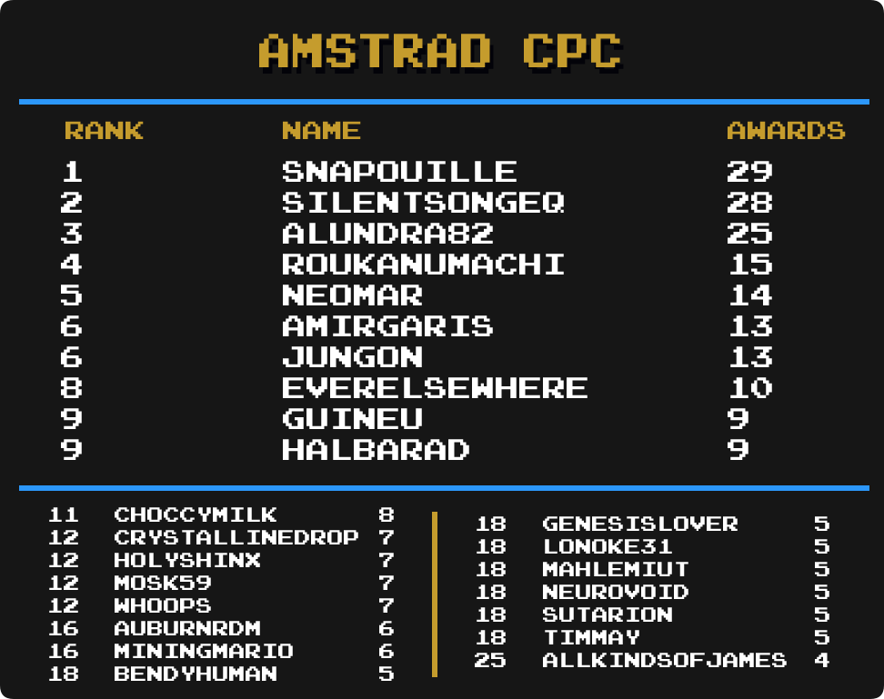
-
 Snapouille has taken 1st place with 29 total mastery awards.
Snapouille has taken 1st place with 29 total mastery awards. -
 Halbarad has moved up 1 spot and is tied for 9th place.
Halbarad has moved up 1 spot and is tied for 9th place. -
 mahlemiut has made it into the top 25 and is in a 7-way tie for 18th place.
mahlemiut has made it into the top 25 and is in a 7-way tie for 18th place.
Apple II
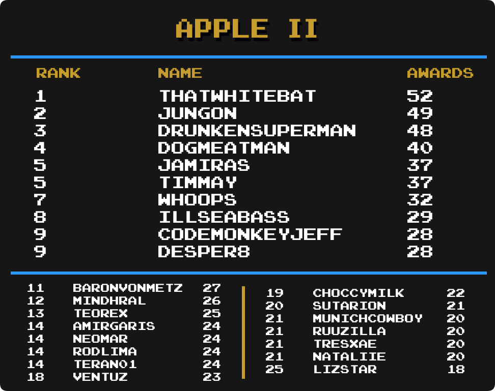
-
 ThatWhiteBat remains in 1st with 52 total mastery awards.
ThatWhiteBat remains in 1st with 52 total mastery awards. -
BaronVonMetz has made it into the top 25 and is in 11th place.
-
 Teran01 has moved up 1 spot and is in a 4-way tie for 14th place.
Teran01 has moved up 1 spot and is in a 4-way tie for 14th place. -
 Munichcowboy has made it into the top 25 and is in a 4-way tie for 21st place.
Munichcowboy has made it into the top 25 and is in a 4-way tie for 21st place.
Arcade
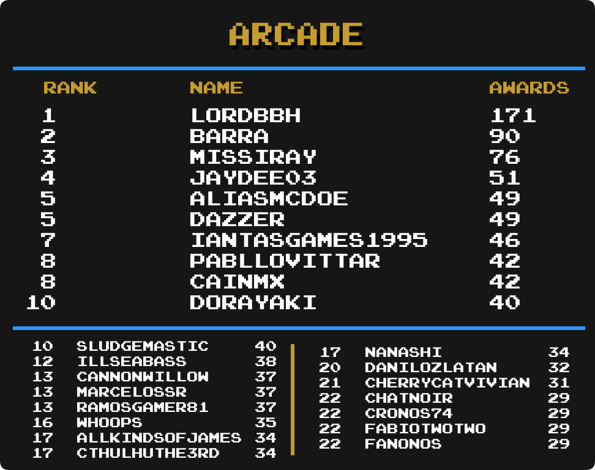
-
 LordBBH remains in 1st with 171 total mastery awards.
LordBBH remains in 1st with 171 total mastery awards. -
 dorayaki has moved up 2 spots and is tied for 10th place.
dorayaki has moved up 2 spots and is tied for 10th place. -
 ILLSeaBass has moved up 3 spots and is in 12th place.
ILLSeaBass has moved up 3 spots and is in 12th place. -
Whoops has moved up 2 spots and is in 16th place.
-
AllKindsOfJames has moved up 2 spots and is in a 3-way tie for 17th place.
Arcadia 2001
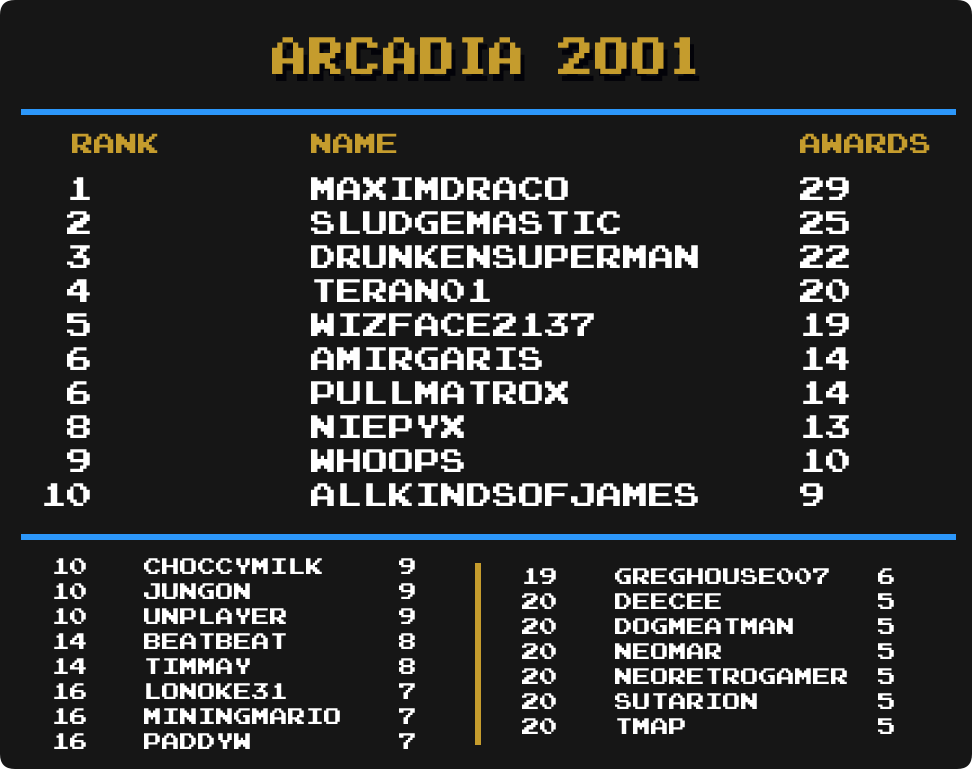
-
 Maximdraco remains in 1st with 29 total mastery awards.
Maximdraco remains in 1st with 29 total mastery awards. -
AmirGaris has moved up 2 spots and is tied for 6th place.
-
MiningMario has made it into the top 25 and is in a 3-way tie for 16th place.
-
DeeCee has moved up 5 spots and is in a 6-way tie for 20th place.
Arduboy
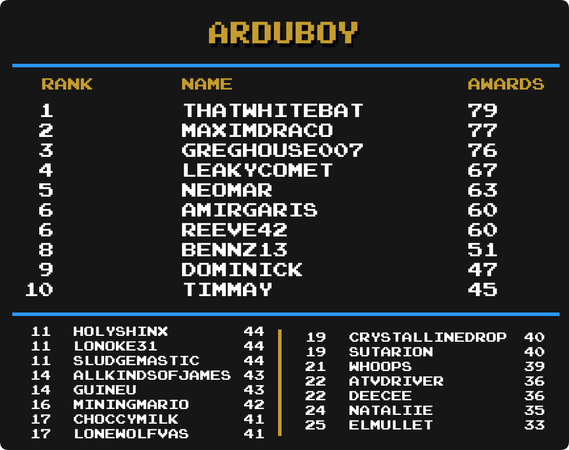
-
ThatWhiteBat has taken 1st place with 79 total mastery awards.
-
Maximdraco has moved up 1 spot and is in 2nd place.
-
Timmay has moved up 2 spots and is in 10th place.
-
Lonoke31 has moved up 2 spots and is in a 3-way tie for 11th place.
-
AllKindsOfJames has moved up 1 spot and is tied for 14th place.
-
CrystallineDrop has moved up 2 spots and is tied for 19th place.
-
DeeCee has made it into the top 25 and is tied for 22nd place.
Atari 2600
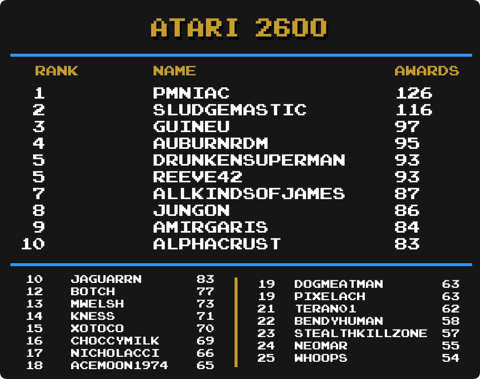
-
 PMniac remains in 1st with 126 total mastery awards.
PMniac remains in 1st with 126 total mastery awards. -
 DrunkenSuperman has moved up 5 spots and is tied for 5th place.
DrunkenSuperman has moved up 5 spots and is tied for 5th place. -
AllKindsOfJames has moved up 1 spot and is in 7th place.
Atari Jaguar CD
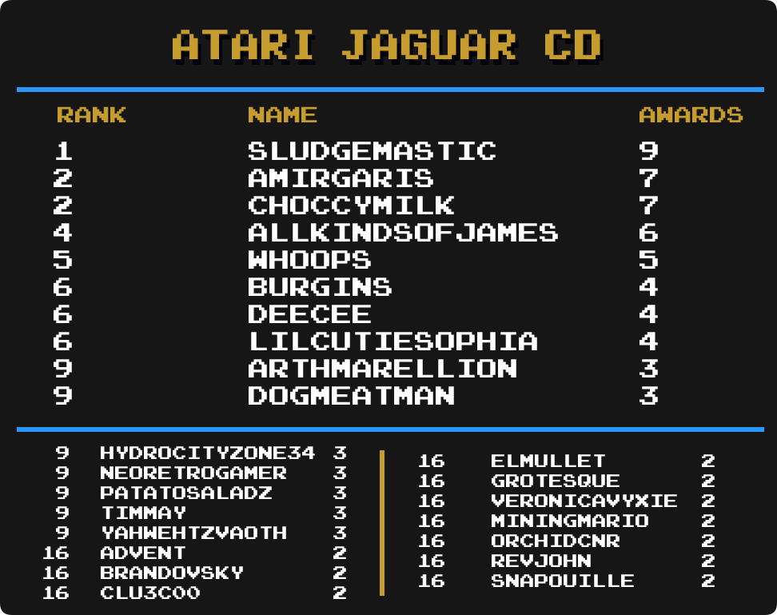
-
 sludgemastic remains in 1st with 9 total mastery awards.
sludgemastic remains in 1st with 9 total mastery awards.
Dreamcast
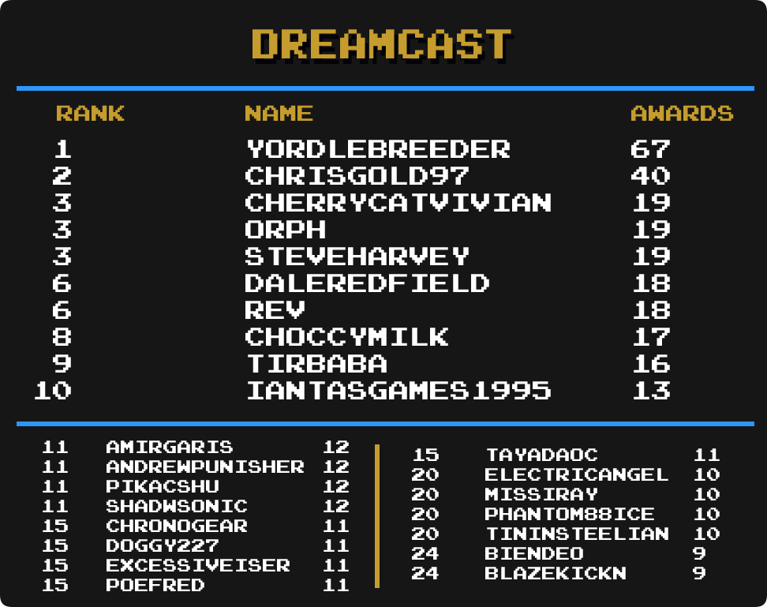
-
 Yordlebreeder remains in 1st with 67 total mastery awards.
Yordlebreeder remains in 1st with 67 total mastery awards. -
ChronoGear has moved up 3 spots and is in a 5-way tie for 15th place.
-
 Poefred has moved up 3 spots and is in a 5-way tie for 15th place.
Poefred has moved up 3 spots and is in a 5-way tie for 15th place. -
 PhAnToM88IcE has moved up 2 spots and is in a 4-way tie for 20th place.
PhAnToM88IcE has moved up 2 spots and is in a 4-way tie for 20th place. -
 tininsteelian has made it into the top 25 and is in a 4-way tie for 20th place.
tininsteelian has made it into the top 25 and is in a 4-way tie for 20th place. -
 Biendeo has made it into the top 25 and is in a 7-way tie for 24th place.
Biendeo has made it into the top 25 and is in a 7-way tie for 24th place.
Elektor TV Games Computer
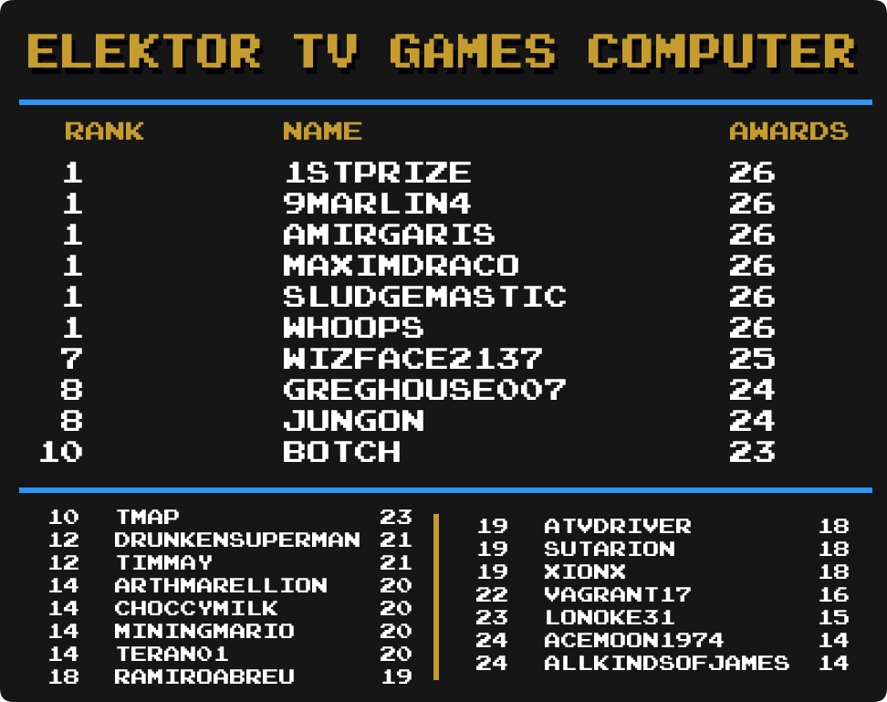
-
 1stPrize remains in 1st with 26 total mastery awards.
1stPrize remains in 1st with 26 total mastery awards. -
ChoccyMilk has moved up 2 spots and is in a 4-way tie for 14th place.
-
MiningMario has moved up 4 spots and is in a 4-way tie for 14th place.
-
 atvdriver has moved up 3 spots and is in a 3-way tie for 19th place.
atvdriver has moved up 3 spots and is in a 3-way tie for 19th place. -
Lonoke31 has made it into the top 25 and is in 23rd place.
Fairchild Channel F
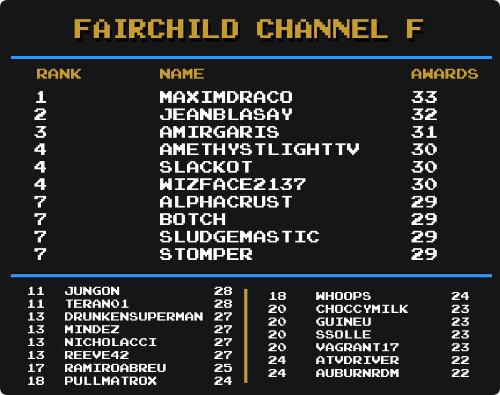
-
Maximdraco remains in 1st with 33 total mastery awards.
-
Mindez has made it into the top 25 and is in a 4-way tie for 13th place.
-
atvdriver has made it into the top 25 and is in a 5-way tie for 24th place.
Game Boy
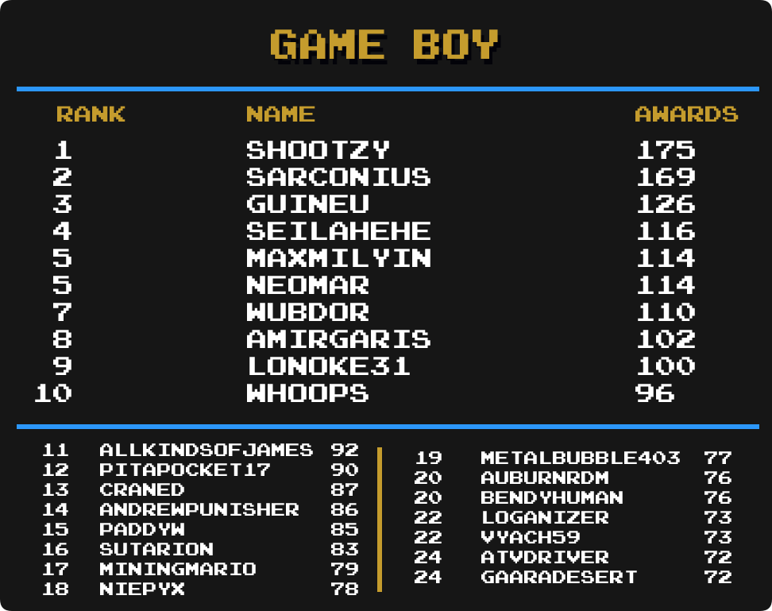
-
 Shootzy remains in 1st with 175 total mastery awards.
Shootzy remains in 1st with 175 total mastery awards. -
 seilahehe has moved up 1 spot and is in 4th place.
seilahehe has moved up 1 spot and is in 4th place. -
 Wubdor has moved up 2 spots and is in 7th place.
Wubdor has moved up 2 spots and is in 7th place. -
pitapocket17 has moved up 3 spots and is in 12th place.
-
MiningMario has moved up 4 spots and is in 17th place.
-
 metalbubble403 has moved up 1 spot and is in 19th place.
metalbubble403 has moved up 1 spot and is in 19th place. -
 Vyach59 has made it into the top 25 and is tied for 22nd place.
Vyach59 has made it into the top 25 and is tied for 22nd place. -
atvdriver has made it into the top 25 and is in a 3-way tie for 24th place.
-
 gaaradesert has made it into the top 25 and is in a 3-way tie for 24th place.
gaaradesert has made it into the top 25 and is in a 3-way tie for 24th place.
Game Boy Advance
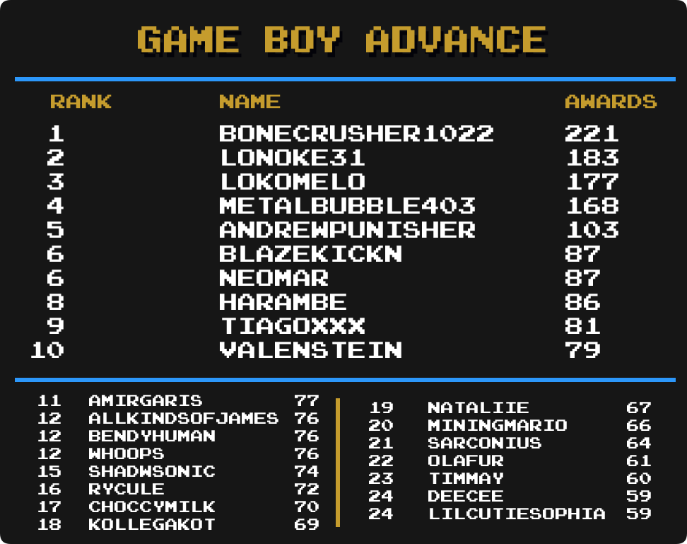
-
 bonecrusher1022 remains in 1st with 221 total mastery awards.
bonecrusher1022 remains in 1st with 221 total mastery awards. -
Lokomelo has moved up 1 spot and is in 3rd place.
-
 BileDemon has moved up 1 spot and is in 8th place.
BileDemon has moved up 1 spot and is in 8th place. -
AllKindsOfJames has moved up 5 spots and is in a 3-way tie for 12th place.
-
RyCuLe has made it into the top 25 and is in 16th place.
-
 KollegaKot has moved up 3 spots and is in 18th place.
KollegaKot has moved up 3 spots and is in 18th place. -
Timmay has made it into the top 25 and is in 23rd place.
-
DeeCee has made it into the top 25 and is tied for 24th place.
Game Boy Color
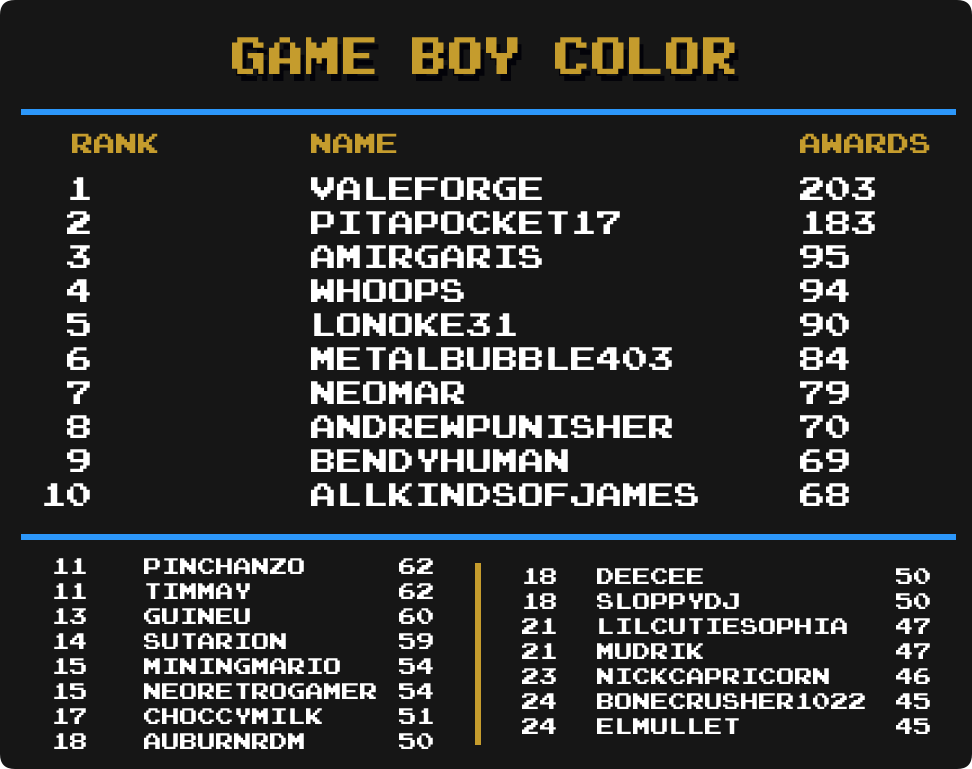
-
 valeforge remains in 1st with 203 total mastery awards.
valeforge remains in 1st with 203 total mastery awards. -
AllKindsOfJames has moved up 2 spots and is in 10th place.
-
Timmay has moved up 1 spot and is tied for 11th place.
-
 NeoRetroGamer has moved up 1 spot and is tied for 15th place.
NeoRetroGamer has moved up 1 spot and is tied for 15th place. -
ChoccyMilk has moved up 1 spot and is in 17th place.
-
 Sloppydj has made it into the top 25 and is in a 3-way tie for 18th place.
Sloppydj has made it into the top 25 and is in a 3-way tie for 18th place. -
 mudrik has moved up 3 spots and is tied for 21st place.
mudrik has moved up 3 spots and is tied for 21st place. -
ElMullet has made it into the top 25 and is in a 3-way tie for 24th place.
Game Gear
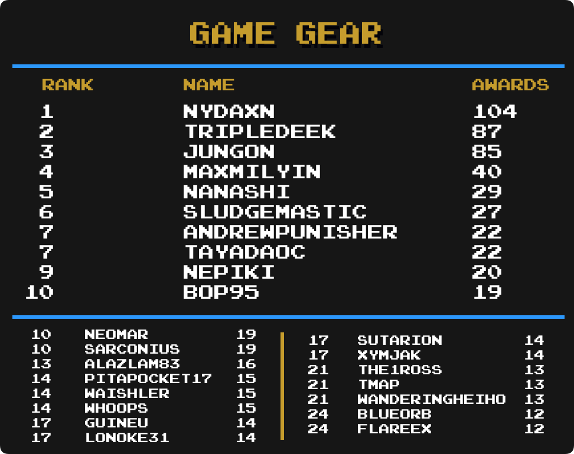
-
Nydaxn remains in 1st with 104 total mastery awards.
-
 AndrewPunisher has moved up 4 spots and is tied for 7th place.
AndrewPunisher has moved up 4 spots and is tied for 7th place. -
 BOP95 has moved up 2 spots and is in a 3-way tie for 10th place.
BOP95 has moved up 2 spots and is in a 3-way tie for 10th place. -
 Alazlam83 has moved up 3 spots and is in 13th place.
Alazlam83 has moved up 3 spots and is in 13th place.
GameCube
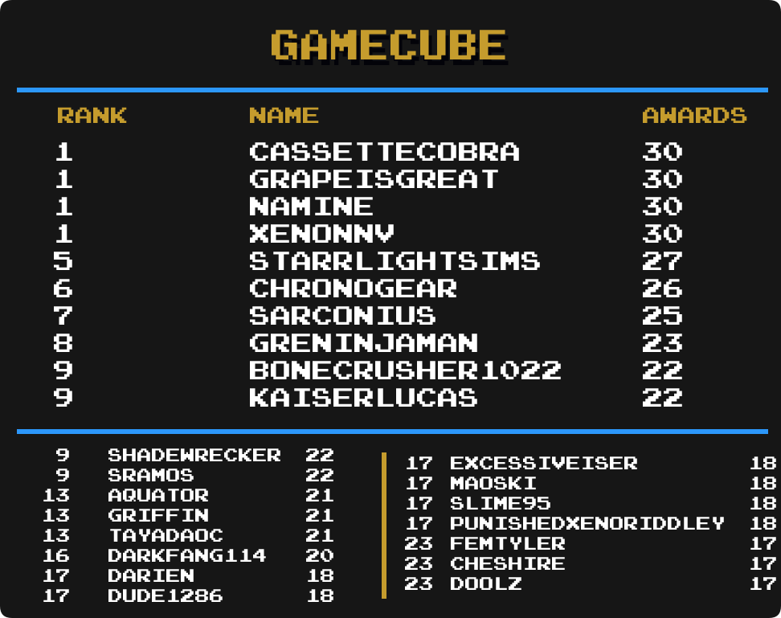
-
 CassetteCobra has taken 1st place with 30 total mastery awards.
CassetteCobra has taken 1st place with 30 total mastery awards. -
GreninjaMan has moved up 7 spots and is in 8th place.
-
 Kaiserlucas has moved up 6 spots and is in a 4-way tie for 9th place.
Kaiserlucas has moved up 6 spots and is in a 4-way tie for 9th place. -
 Slime95 has made it into the top 25 and is in a 6-way tie for 17th place.
Slime95 has made it into the top 25 and is in a 6-way tie for 17th place. -
 Cheshire has made it into the top 25 and is in a 8-way tie for 23rd place.
Cheshire has made it into the top 25 and is in a 8-way tie for 23rd place.
Interton VC 4000
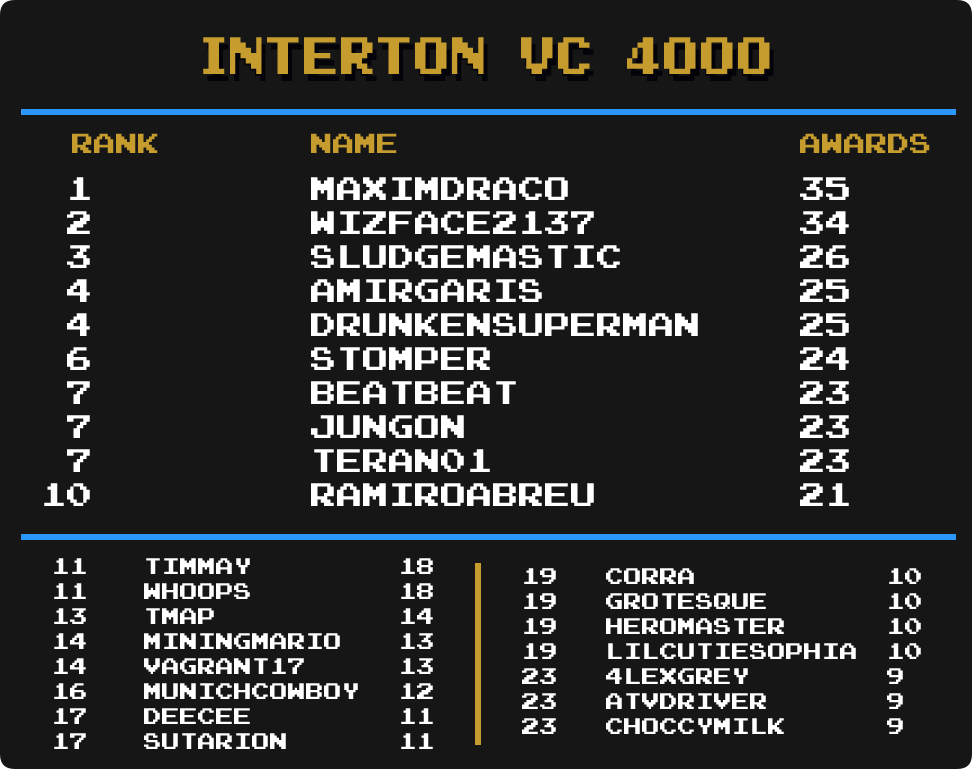
-
Maximdraco remains in 1st with 35 total mastery awards.
-
 Stomper has moved up 2 spots and is in 6th place.
Stomper has moved up 2 spots and is in 6th place. -
MiningMario has moved up 3 spots and is tied for 14th place.
Master System
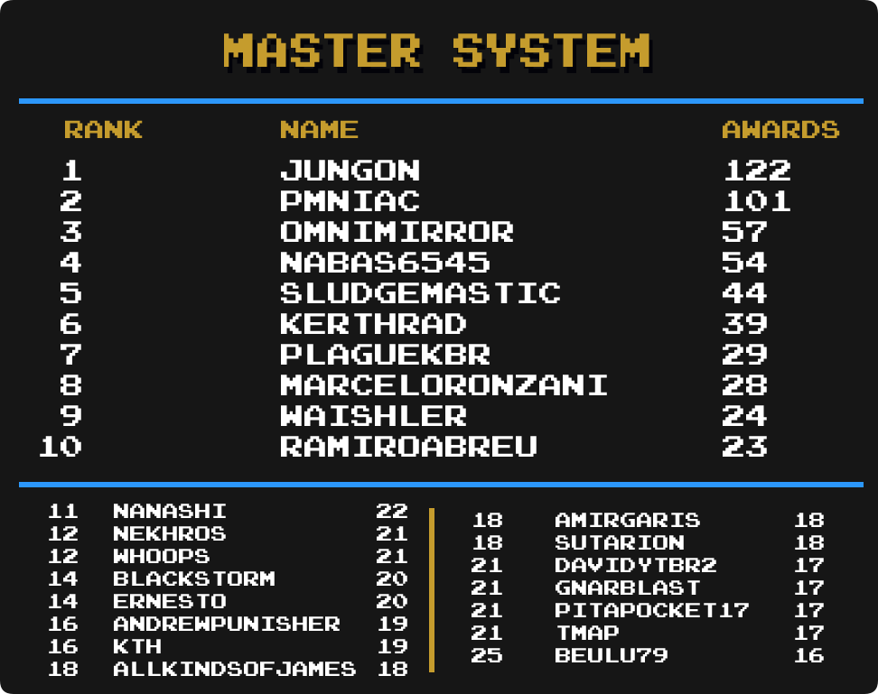
-
Jungon remains in 1st with 122 total mastery awards.
-
MarceloRonzani has made it into the top 25 and is in 8th place.
-
Sutarion has made it into the top 25 and is in a 3-way tie for 18th place.
Mega Drive
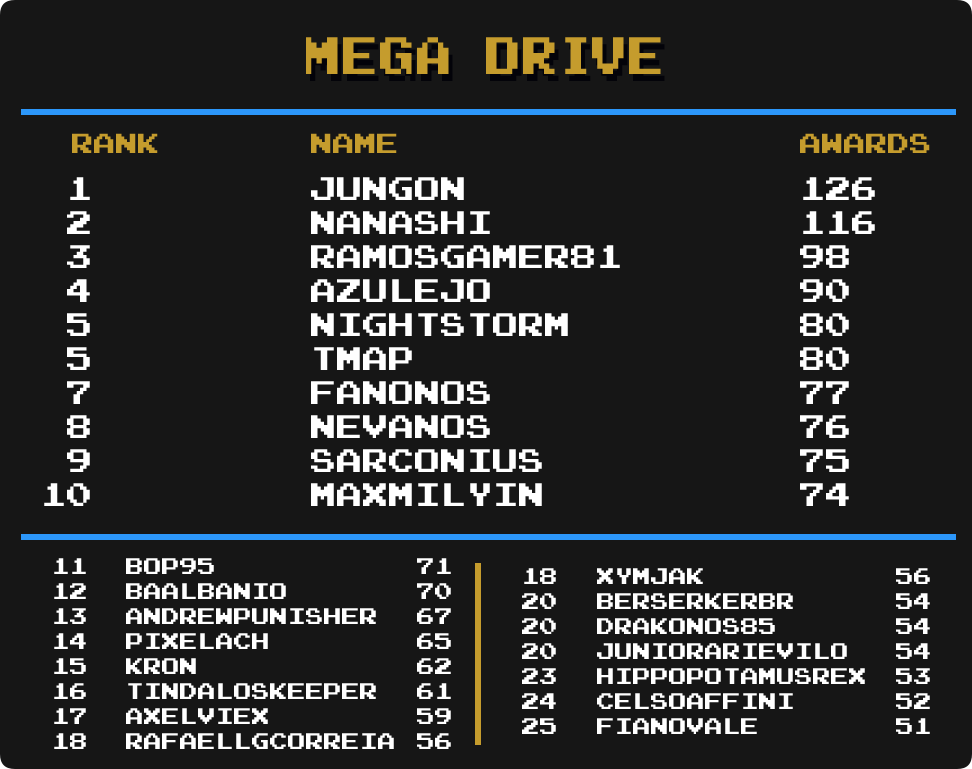
-
Jungon remains in 1st with 126 total mastery awards.
-
 rafaellgcorreia has made it into the top 25 and is tied for 18th place.
rafaellgcorreia has made it into the top 25 and is tied for 18th place. -
 Xymjak has moved up 1 spot and is tied for 18th place.
Xymjak has moved up 1 spot and is tied for 18th place.
Mega Duck
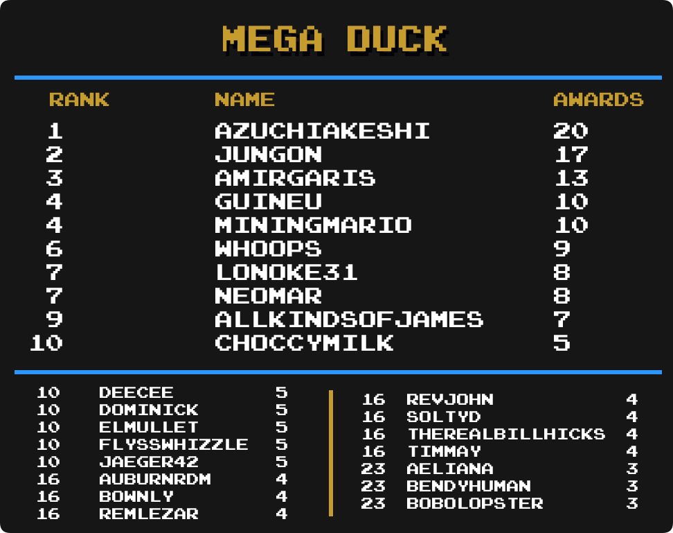
-
 AzuchiAkeshi remains in 1st with 20 total mastery awards.
AzuchiAkeshi remains in 1st with 20 total mastery awards. -
Whoops has moved up 1 spot and is in 6th place.
-
NEOMAR has moved up 1 spot and is tied for 7th place.
-
ElMullet has moved up 4 spots and is in a 6-way tie for 10th place.
-
Aeliana has made it into the top 25 and is in a 21-way tie for 23rd place.
Nintendo 64
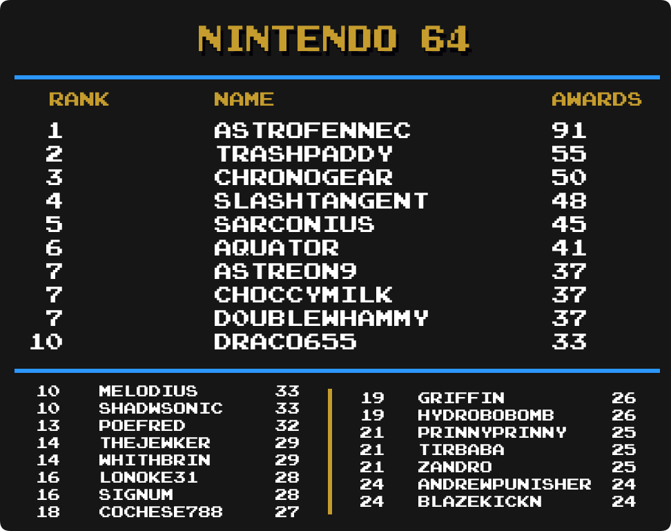
-
 AstroFennec remains in 1st with 91 total mastery awards.
AstroFennec remains in 1st with 91 total mastery awards. -
ChoccyMilk has moved up 1 spot and is in a 3-way tie for 7th place.
-
Draco655 has moved up 2 spots and is in a 3-way tie for 10th place.
-
 Whithbrin has moved up 1 spot and is tied for 14th place.
Whithbrin has moved up 1 spot and is tied for 14th place. -
Lonoke31 has moved up 1 spot and is tied for 16th place.
-
 cochese788 has made it into the top 25 and is in 18th place.
cochese788 has made it into the top 25 and is in 18th place. -
Tirbaba has moved up 3 spots and is in a 3-way tie for 21st place.
NES
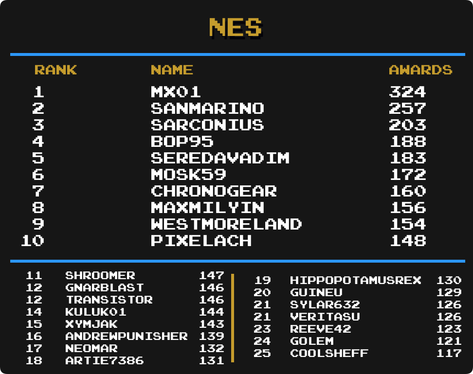
-
 mx01 remains in 1st with 324 total mastery awards.
mx01 remains in 1st with 324 total mastery awards. -
 Pixelach has moved up 1 spot and is in 10th place.
Pixelach has moved up 1 spot and is in 10th place. -
 gnarblast has moved up 4 spots and is tied for 12th place.
gnarblast has moved up 4 spots and is tied for 12th place. -
NEOMAR has moved up 2 spots and is in 17th place.
-
 Reeve42 has moved up 1 spot and is in 23rd place.
Reeve42 has moved up 1 spot and is in 23rd place. -
 sheff666 has made it into the top 25 and is tied for 25th place.
sheff666 has made it into the top 25 and is tied for 25th place.
Nintendo DS
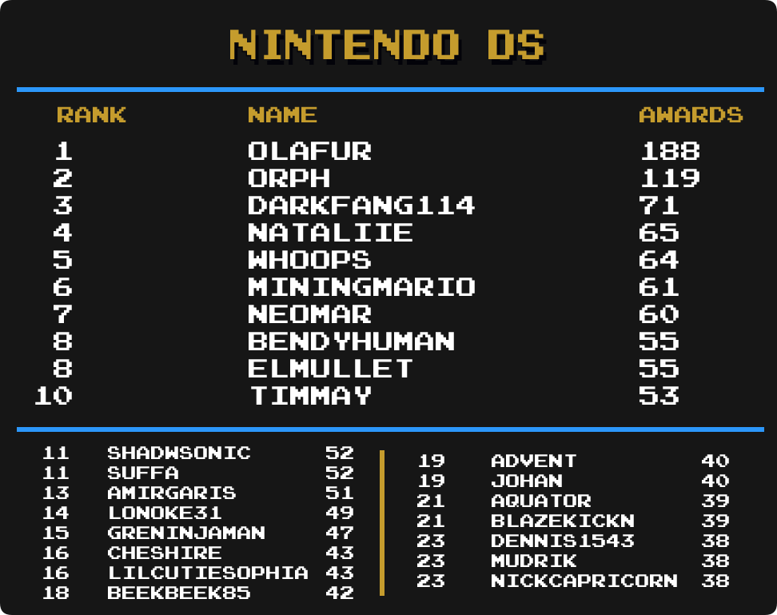
-
 Olafur remains in 1st with 188 total mastery awards.
Olafur remains in 1st with 188 total mastery awards. -
Timmay has moved up 3 spots and is in 10th place.
-
Cheshire has moved up 2 spots and is tied for 16th place.
-
Johan has moved up 4 spots and is tied for 19th place.
-
 NickCapricorn has made it into the top 25 and is in a 3-way tie for 23rd place.
NickCapricorn has made it into the top 25 and is in a 3-way tie for 23rd place.
Nintendo DSi
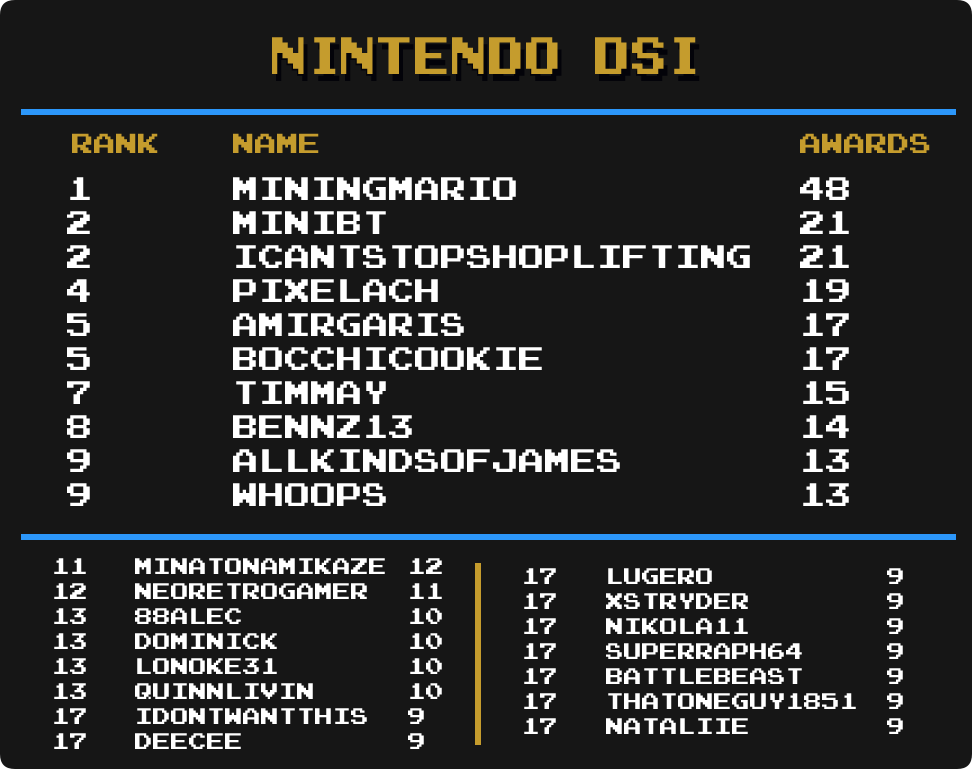
-
MiningMario remains in 1st with 48 total mastery awards.
-
 minibt has moved up 1 spot and is tied for 2nd place.
minibt has moved up 1 spot and is tied for 2nd place. -
bennz13 has made it into the top 25 and is in 8th place.
-
 88alec has made it into the top 25 and is in a 4-way tie for 13th place.
88alec has made it into the top 25 and is in a 4-way tie for 13th place. -
Dominick has moved up 10 spots and is in a 4-way tie for 13th place.
-
DeeCee has moved up 5 spots and is in a 9-way tie for 17th place.
PC Engine
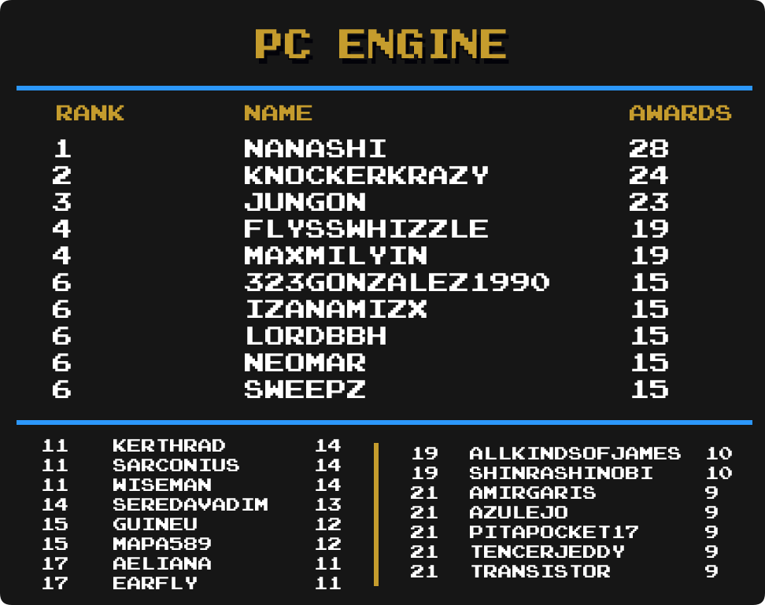
-
 Nanashi remains in 1st with 28 total mastery awards.
Nanashi remains in 1st with 28 total mastery awards. -
 FlyssWhizzle has moved up 1 spot and is tied for 4th place.
FlyssWhizzle has moved up 1 spot and is tied for 4th place. -
 Kerthrad has moved up 8 spots and is in a 3-way tie for 11th place.
Kerthrad has moved up 8 spots and is in a 3-way tie for 11th place.
PC Engine CD
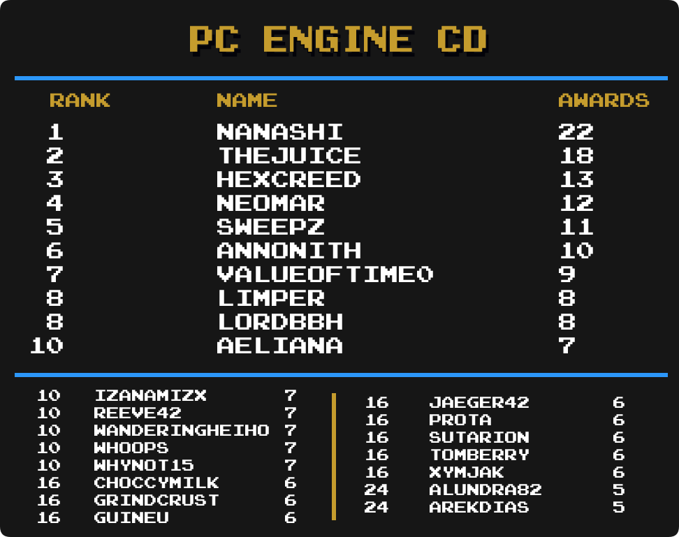
-
Nanashi remains in 1st with 22 total mastery awards.
-
 Sweepz has moved up 1 spot and is in 5th place.
Sweepz has moved up 1 spot and is in 5th place.
PC-8000/8800
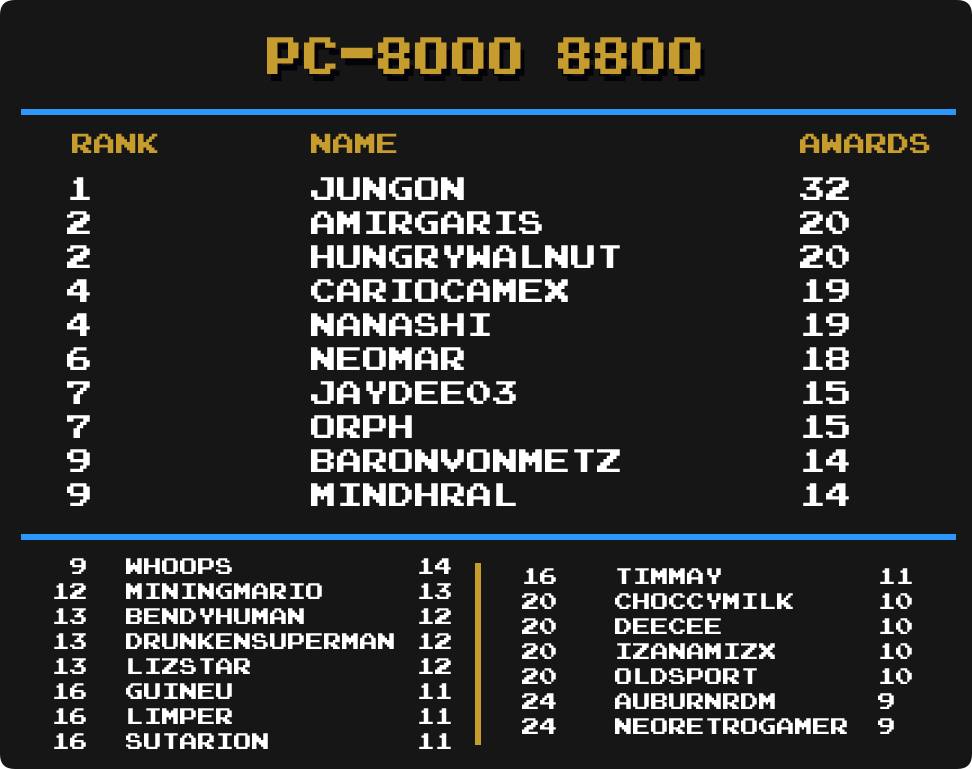
-
Jungon remains in 1st with 32 total mastery awards.
PlayStation
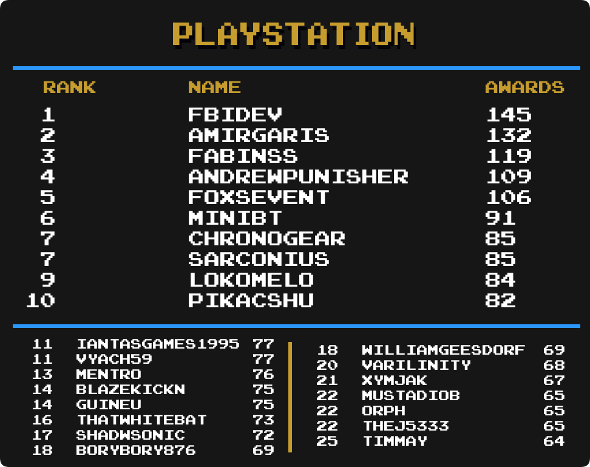
-
 FBiDev remains in 1st with 145 total mastery awards.
FBiDev remains in 1st with 145 total mastery awards. -
ChronoGear has moved up 1 spot and is tied for 7th place.
-
 IantasGames1995 has moved up 1 spot and is tied for 11th place.
IantasGames1995 has moved up 1 spot and is tied for 11th place. -
 Blazekickn has moved up 1 spot and is tied for 14th place.
Blazekickn has moved up 1 spot and is tied for 14th place. -
 williamgeesdorf has moved up 1 spot and is tied for 18th place.
williamgeesdorf has moved up 1 spot and is tied for 18th place. -
Xymjak has moved up 1 spot and is in 21st place.
-
 MustadioB has moved up 1 spot and is in a 3-way tie for 22nd place.
MustadioB has moved up 1 spot and is in a 3-way tie for 22nd place. -
Orph has made it into the top 25 and is in a 3-way tie for 22nd place.
PlayStation 2
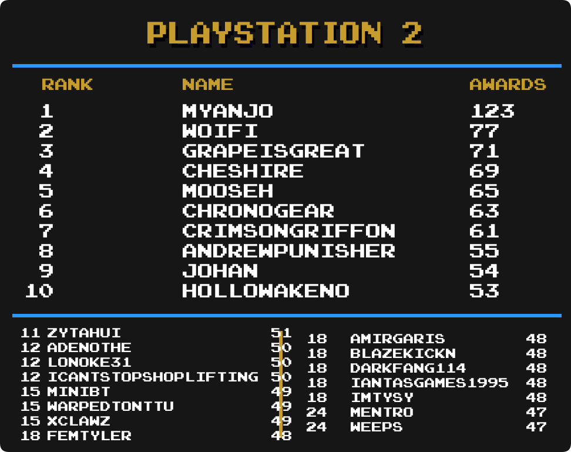
-
 Myanjo remains in 1st with 123 total mastery awards.
Myanjo remains in 1st with 123 total mastery awards. -
AndrewPunisher has moved up 1 spot and is in 8th place.
-
 HollowAkeno has moved up 1 spot and is in 10th place.
HollowAkeno has moved up 1 spot and is in 10th place. -
 Zytahui has moved up 3 spots and is in 11th place.
Zytahui has moved up 3 spots and is in 11th place. -
 Sartoonel has moved up 3 spots and is in a 3-way tie for 12th place.
Sartoonel has moved up 3 spots and is in a 3-way tie for 12th place. -
minibt has moved up 6 spots and is in a 3-way tie for 15th place.
-
 WarpedTonttu has moved up 7 spots and is in a 3-way tie for 15th place.
WarpedTonttu has moved up 7 spots and is in a 3-way tie for 15th place. -
 Darkfang114 has moved up 4 spots and is in a 6-way tie for 18th place.
Darkfang114 has moved up 4 spots and is in a 6-way tie for 18th place. -
 weeps has made it into the top 25 and is tied for 24th place.
weeps has made it into the top 25 and is tied for 24th place.
PlayStation Portable
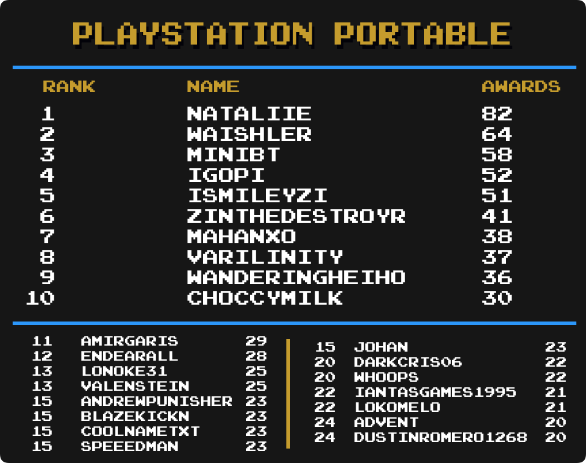
-
Nataliie remains in 1st with 82 total mastery awards.
-
Blazekickn has moved up 3 spots and is in a 5-way tie for 15th place.
-
Whoops has moved up 2 spots and is tied for 20th place.
Pokémon Mini
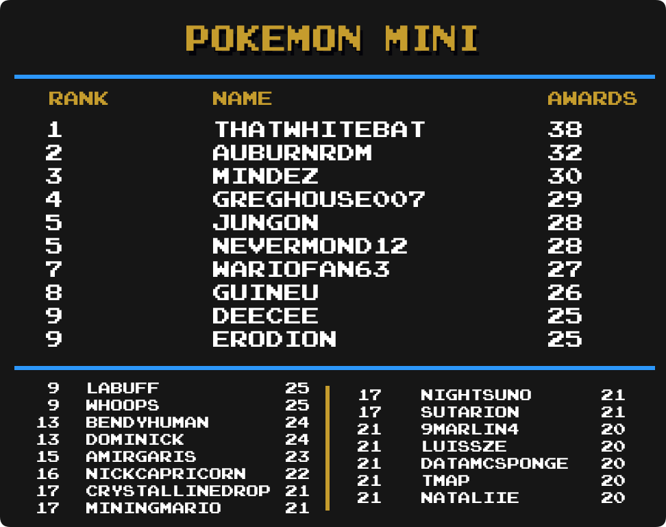
-
ThatWhiteBat remains in 1st with 38 total mastery awards.
-
DeeCee has moved up 4 spots and is in a 4-way tie for 9th place.
-
NickCapricorn has moved up 1 spot and is in 16th place.
-
CrystallineDrop has moved up 3 spots and is in a 4-way tie for 17th place.
-
 Nightsuno has moved up 3 spots and is in a 4-way tie for 17th place.
Nightsuno has moved up 3 spots and is in a 4-way tie for 17th place. -
 DataMcSponge has made it into the top 25 and is in a 5-way tie for 21st place.
DataMcSponge has made it into the top 25 and is in a 5-way tie for 21st place.
Sega Saturn
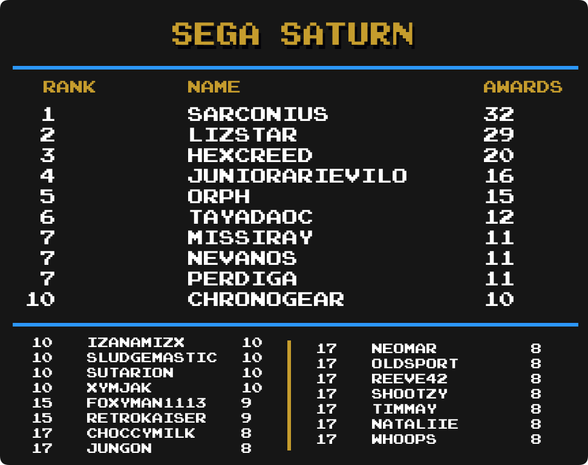
-
 Sarconius has taken 1st place with 32 total mastery awards.
Sarconius has taken 1st place with 32 total mastery awards. -
 Tayadaoc has moved up 1 spot and is in 6th place.
Tayadaoc has moved up 1 spot and is in 6th place. -
 missiray has moved up 2 spots and is in a 3-way tie for 7th place.
missiray has moved up 2 spots and is in a 3-way tie for 7th place. -
 perdiga has moved up 1 spot and is in a 3-way tie for 7th place.
perdiga has moved up 1 spot and is in a 3-way tie for 7th place. -
ChronoGear has moved up 3 spots and is in a 5-way tie for 10th place.
-
Sutarion has moved up 2 spots and is in a 5-way tie for 10th place.
-
 Foxyman1113 has moved up 2 spots and is tied for 15th place.
Foxyman1113 has moved up 2 spots and is tied for 15th place.
Sega CD
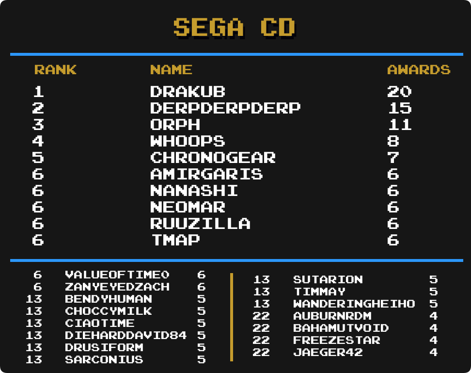
-
 Drakub remains in 1st with 20 total mastery awards.
Drakub remains in 1st with 20 total mastery awards. -
 Derpderpderp has made it into the top 25 and is in 2nd place.
Derpderpderp has made it into the top 25 and is in 2nd place.
SG-1000
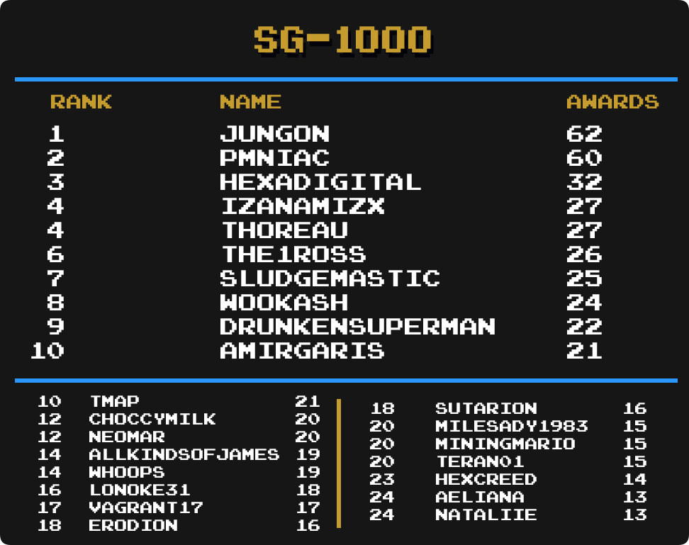
-
Jungon remains in 1st with 62 total mastery awards.
-
The1Ross has moved up 2 spots and is in 6th place.
-
DrunkenSuperman has moved up 7 spots and is in 9th place.
-
Aeliana has made it into the top 25 and is tied for 24th place.
SNES
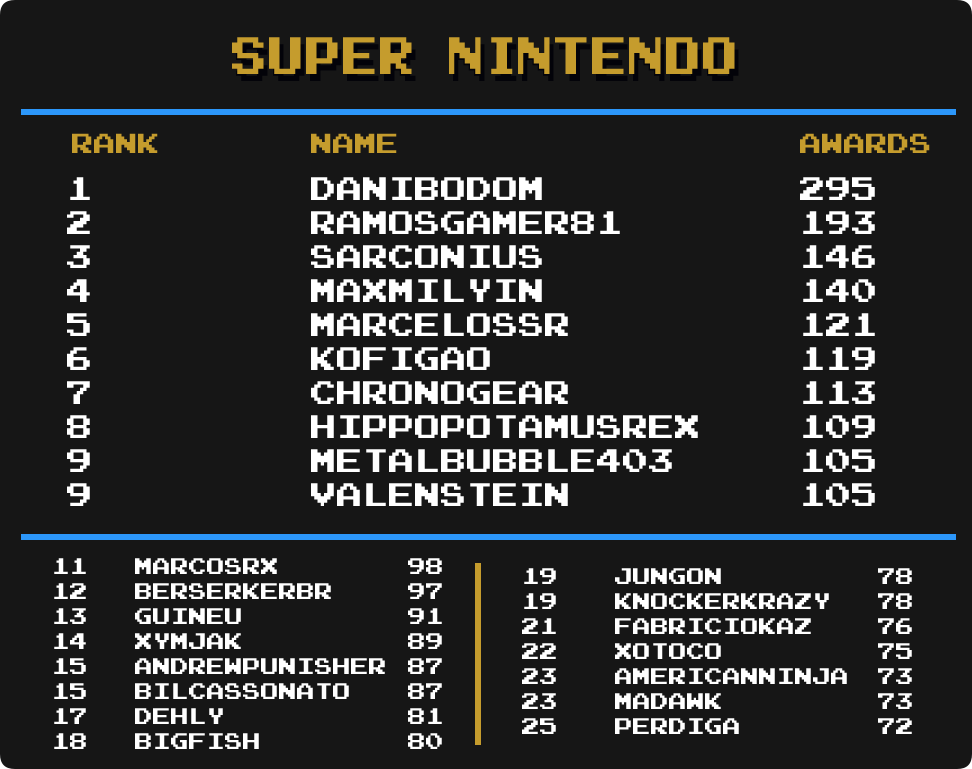
-
 danibodom remains in 1st with 295 total mastery awards.
danibodom remains in 1st with 295 total mastery awards. -
metalbubble403 has moved up 1 spot and is tied for 9th place.
-
AndrewPunisher has moved up 1 spot and is tied for 15th place.
-
Jungon has moved up 1 spot and is tied for 19th place.
-
perdiga has made it into the top 25 and is tied for 25th place.
Uzebox
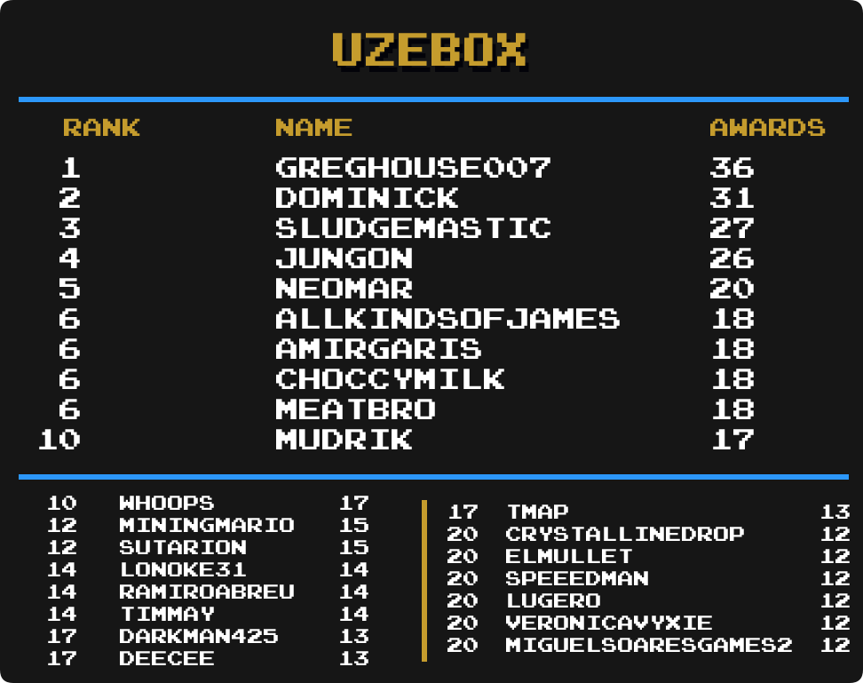
-
 GregHouse007 remains in 1st with 36 total mastery awards.
GregHouse007 remains in 1st with 36 total mastery awards. -
AllKindsOfJames has moved up 2 spots and is in a 4-way tie for 6th place.
-
ChoccyMilk has moved up 1 spot and is in a 4-way tie for 6th place.
-
CrystallineDrop has moved up 5 spots and is in a 8-way tie for 20th place.
-
Speeedman has made it into the top 25 and is in a 8-way tie for 20th place.
-
 Lugero has made it into the top 25 and is in a 8-way tie for 20th place.
Lugero has made it into the top 25 and is in a 8-way tie for 20th place.
Virtual Boy
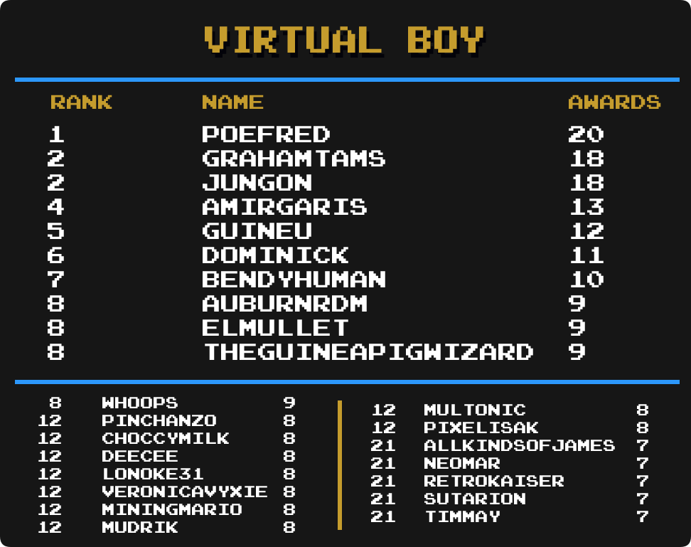
-
Poefred remains in 1st with 20 total mastery awards.
-
ElMullet has made it into the top 25 and is in a 4-way tie for 8th place.
WASM-4
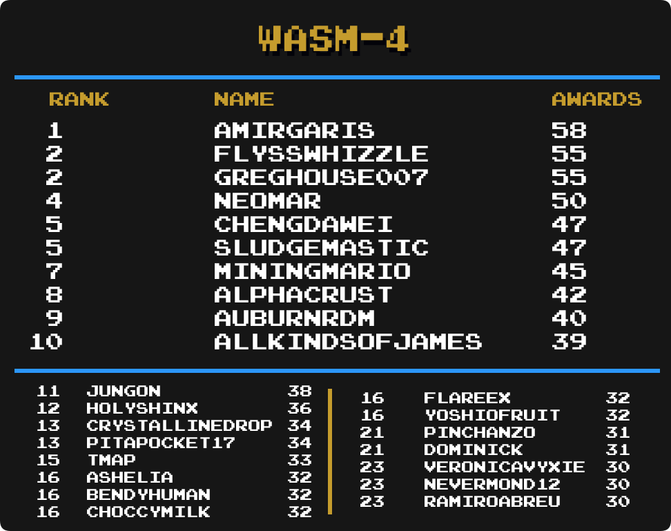
-
AzuchiAkeshi remains in 1st with 56 total mastery awards.
-
DeeCee has moved up 2 spots and is tied for 15th place.
-
Sutarion has moved up 1 spot and is tied for 17th place.
Watara Supervision
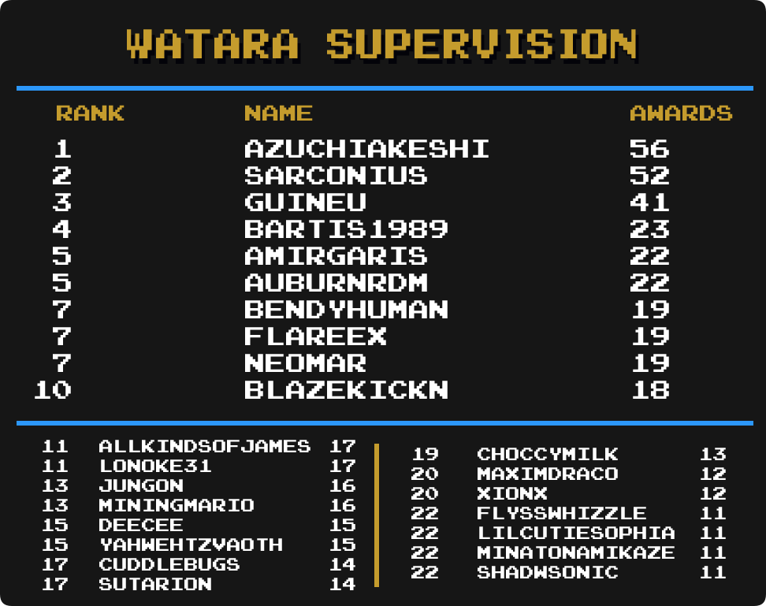
-
AzuchiAkeshi remains in 1st with 56 total mastery awards.
-
DeeCee has moved up 2 spots and is tied for 15th place.
-
Sutarion has moved up 1 spot and is tied for 17th place.